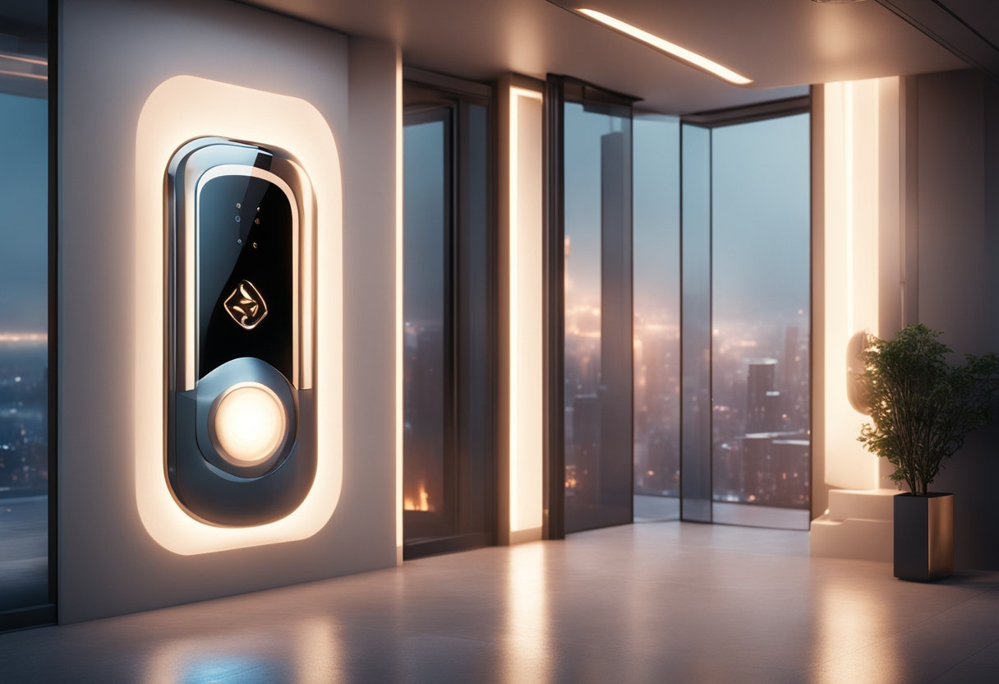

Bradbury Homes
Discover the ultimate experience in futuristic living with our California home, a visionary masterpiece that redefines the boundaries of modern design and technology.
Ultimate Convenience

This remarkable home embodies the pinnacle of automation, seamlessly integrating into your lifestyle to create an atmosphere of unparalleled ease. Imagine a residence where every task is anticipated and executed with precision—voice-activated commands control lighting, temperature, and daily routines, ensuring a life of effortless luxury. With automated scheduling and adaptive systems, your home learns and responds to your needs, allowing you to focus on what truly matters. The future is now, where convenience is not just a feature but a way of life.
Pure Entertainment

This sanctuary of leisure offers an integrated media system that caters to every whim, from the latest movies to your favorite music, all at your command. Dynamic lighting and customizable soundscapes transform each room into a personalized entertainment haven, ensuring that every moment is a delightful experience. Whether you're hosting a gathering or enjoying a quiet night in, this home provides a seamless blend of entertainment options designed to enhance every single experience. Discover a living space where pure entertainment is always within reach.
Incredible Safety
This residence features cutting-edge safety measures that go beyond the conventional, with smart systems that monitor and manage every aspect of your home's security. Automated surveillance, real-time alerts, and intelligent hazard detection create a shield of safety around you and your loved ones. Self-maintaining surfaces and smart waste management ensure a clean and secure environment, while adaptive controls provide a proactive approach to home safety. Experience peace of mind in a home where security is seamlessly integrated into your daily life.